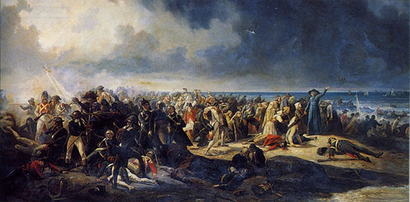
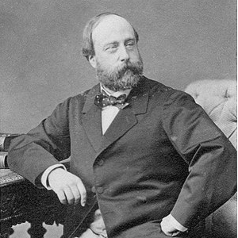
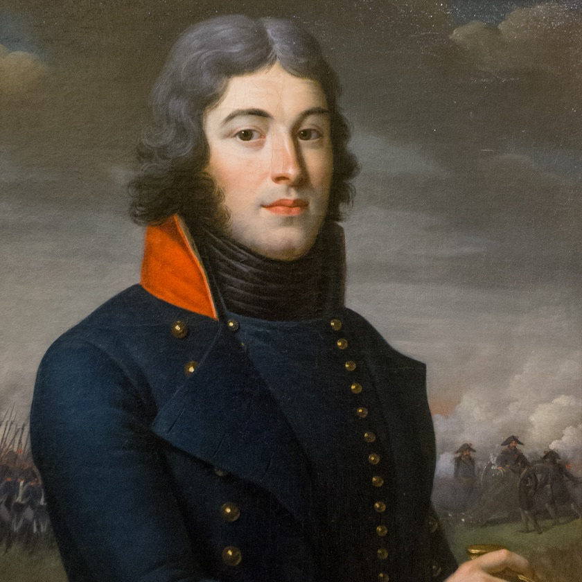

Marche des chouans
Complainte des chouans
March and Lament of the Chouans
Textes publiés par l'Abbé François Cadic (en novembre et décembre 1913, puis en mars 1923)

Balayer les 3 cases jaunes pour afficher les partitions, cliquer pour entendre les arrangements MIDI
Illustration: "Le combat de Quiberon" par Jean Sorieul (1850)
|
Mélodie 1: Marche des Chouans 1 |
Mélodie 2: Marche des Chouans 2 |
Mélodie 3: Complainte des Chouans |
Les mélodies 1 et 3 sont pratiquement identiques
Arrangement Christian Souchon (c) 2023
Source: "Paroisse bretonne de Paris" de l'abbé François Cadic, N° 131, 132 (PBP: nov. et déc. 1913, pp. 378-381) et N° 172 (PBP: mars 1923, p 493-494)
|
A propos de la mélodie La mélodie N°1 a été publiée par l'abbé François Cadic sous le titre "Marche des chouans" dans "La Paroisse Bretonne" (novembre 1913, Dastum : p.378-380, classification Malieu: M-00028). La mélodie N°2 a été publiée 1 mois plus tard sous le n°132, "Variante à la chanson de la marche des chouans", p.381. Elle vient de Moustoir-Ac et est sensiblement différente de la précédente. La mélodie N°3 ne put être publiée dans les N° de la "Paroisse" de février et mars 1918 consacrés au chant N°146, "Derniers chouans" (classification Malrieu: M-00034), par suite de contraintes matérielles dûes à la guerre. Elle le fut, avec une réédition des paroles, sous le titre "N°172, Complainte des chouans", en mars 1923. L'abbé Cadic ne semble pas avoir remarqué combien elle est proche de la mélodie 1. A propos du texte La mélodie 1 est interprétée (bouton en bas de page) par le chanteur Marcel Nobla, doté d'une belle voix adaptée aux chants de marins: "Jean-François de Nantes", "Siège de Montaigu", "Pique la Baleine"... Il commença sa carrière dans les années 1950! Sur le site "marcel-legay-a-la-rtf-en-1956", on apprend qu'en 1956 c'était un artiste fameux du cabaret le "Lapin Agile". Il était chanteur et guitariste et il excella dans divers registres de la chanson, quelle soit traditionnelle, historique, révolutionnaire, paillarde, Au Lapin Agile, il chanta Aristide Bruant et Marcel Legay. Son interprétation de "Si la Garonne avait voulu" de Gustave Nadaud est restée dans la mémoire des fidèles du "Lapin". On peut supposer qu'il est l'auteur des paroles françaises qui sont extraites de la traduction publiée par F. Cadic avec le texte vannetais dont on trouvera ici un équivalent KLT. |
About the tune Melody No. 1 was published by the Rev. François Cadic in La Paroisse Bretonne, under the title "The Chouans' March", (November 1913, Dastum: pp. 378-380, Malrieu item: M. 00028). Melody No. 2 was published 1 month later under N°132, "Variant to the Chouans' march", p.381. It comes from Moustoir-Ac and is significantly different from the previous. Melody No. 3 could not be published in the Paroisse issues of February and March 1918 dedicated to song N°146, The last Chouans (Malrieu item: M-00034), on account of material constraints due to the war. It was, along with a reissue of the lyrics, under the title N°172 "Lament of the Chouans", in March 1923. Rev. Cadic does not seem to have noticed how close it is to melody N° 1. About the lyrics Melody 1 is performed (button at the bottom of the page) by singer Marcel Nobla, with a beautiful voice suited to sea shanties: "Jean-François de Nantes", "Siege of Montaigu", "Pique la Baleine". .. He began his career in the 1950s! On the site "marcel-legay-a-la-rtf-en-1956", we learn that in 1956 he was a famous cabaret artist at Montmartre's "Lapin Agile". He was a singer and guitarist and he excelled in various registers of song, whether traditional, historical, revolutionary, bawdy At "Lapin Agile", he sang Aristide Bruant's and Marcel Legay's songs. His interpretation of If the Garonne had wanted by Gustave Nadaud remained in the memory of the faithful visitors of Lapin. We can assume that he is the author of the French lyrics of the song at hand, which are derived from the translation published by F. Cadic along with the Vannes dialect text of which we will find here a KLT equivalent. |
1° Marche des Chouans
Publié par François Cadic dans la "Paroisse Bretonne de Paris", novembre 1913.|
BREZHONEG (Stumm KLT) 1. N'ho-peus ket soñj, Bretoned, a-gostez douar Alre (ter) Hag er bloaz mil seizh kant pe(v)ar ugent ha pemzek? (bis) 2. Hag er bloaz mil seizh kant pe(v)ar ugent ha pemzek Pa ruilhe 'r bolidi, gouel Zant Per en Alre (Stumm all: "Pa oa ur c'hombat bras...") 3. Pa ruilhe 'r bolidi war 'r pavez en Alre Hag e-kreiz ar plasenn, Gwezenn al Liberte 4. Hag e-kreiz ar plasenn, Gwezenn al Liberte Ha p'erruas eno avant-gard ar Mercier 5. P'erruas Jorj eno ha gantañ La-Vendé. Hag a grias "Qui vive!", hini na responte. 6. Da zeizh eur da vintin e pasent en Alre An taoloù warnezhe ker stank e'l ar gwenan. 7. Hag ar Jeneral Jorj a Vrec'h e-tal Alre Henezh 'daolas ur c'hri d'ar penn eus an arme: 8. Henezh 'daolas e vouezh partoud dre an arme: "Kouraj-ta, mes enfants! Kouraj, va bugale! 9. Kouraj-ta, mes enfants! Kouraj, va bugale! Skarzhomp ar ganailh-mañ er-maez deus an Alre, 10. Skarzhomp ar ganailh-mañ er-maez deus an Alre, Betek Kroaz an tri c'horn greomp an ambroug dezhe. 11. Fourchit o c'hanolioù! Lakait o da vlêjal! Mallozh ruz! Ni o gwelo astennet war an douar." 12. Er-maez deus an Alre o-deus int holl boutet Betek Kroaz an tri c'horn o-deus int ambrouget. (Stumm all: "Betek prad ar men houarn...") 13. Antronoz deiz warlerc'h e oant ivez skarzhet War 'n hent da Giberen e oant bet konduet. 13. Pemp pe c'hwec'h deiz goude war traezhenn Kiberen E ruilhe bolidi ker stank e'l ar gwenan. 14. Pa erruas Jorj eno n'hag ivez La-Vende Int a c'houlenn a-benn ar penn deus an arme. 15. Ar penn deus an arme pa o-deus bet kavet Da gombat war an traezh e oant bet daveet. 16. Neve(zi)nti vat e-bet atav ne errue: Int a welas gwall splann oe treizoni dioute. 17. Jorj neuze a laras ober buhan retred Tolpet en-deus e dud evit bout ambarket 18. Aet eo ha zastumas eizh batimant pe nav Da rein d'ar zoudarded vit diskenn e Sarzho. 19. A-ziouzh pemp mil den o-doe ar re ruz Na chome mui gante 'met pemp kant "difestus". 20. Ha c'hoazh e-tal ar mor ha pa oant erruet Kentoc'h 'vit koll buez o-doe en-em rantet. Vannetais transcrit KLT par Christian Souchon |
CHANT FRANCAIS 1. N'avez-vous souvenance, Bretons d'auprès Auray, O gai ! (bis) De l'an quatre-vingt-quinze De l'an mille sept-cent de l'an mille sept-cent quatre-vingt-quinze Quand les boulets roulaient?(bis) A la saint Pierre, O gai ! (variante:"Il y eut un grand combat...") Quand les boulets roulaient sur le pavé d'Auray Au milieu de la place L'arbre de Liberté! (bis) Au milieu de la place L'arbre de Liberté! 2. Arriva l'avant-garde L'avant-garde à Mercier, O gai Lorsque George arriva ainsi que La-Vendée Qu'il s'écria "Qui vive?" Nul ne lui répondit A sept heures du matin ils passèrent Auray Sur eux les coups pleuvaient Drus comme essaim d'abeilles Et puis l' général Georges De Brec'h tout près d'Auray Lequel poussa un cri à la tête de l'armée Sa voix se fit entendre de par toute l'armée "Courage ! criait-t-il, Courage donc, les gars ! Courage, les enfants! Courage, mes enfants! Chassons cette canaille Chassons-la hors d'Auray Chassons cette canaille Chassons-la hors d'Auray Jusque là-bas à la Grand-Croix! Faisons-lui un brin de conduite Enfourchons leurs canons! Mettons-les à beugler! Palsambleu, qu'on les voie étendus sur le sol!" Et en-dehors d'Auray ils les ont tous boutés A la Croix des Trois coins Ils les ont reconduits. (Variante: Jusqu'à la Croix de fer...) Le lendemain ce fut A leur tour de céder... On leur fit la conduite Jusques à Quiberon. Cinq ou six jours ensuite sur la grève à Quiberon c'est les boulets qui pleuvent Drus comme essaim d'abeilles. 3. Puis George et la Vendée Puis George et la Vendée ont demandé la tête la tête de l'armée La tête de l'armée ont pris sitôt qu'ils l'ont trouvée. Au combat sur la grève ils furent engagés. Mais aucune bonne nouvelle Ne leur parvenait plus. C'était une évidence La trahison rôdait. Georges nous ordonna : « Battez vite en retraite ! Il rassembla ses hommes tous, pour les embarquer Il réunit huit ou neuf bateaux: "Il nous faut descendre à Sarzeau. Des bâtiments nous attendent, allez mes braves Chouans !" Et sur les cinq mille hommes que comptait la rouge armée En état de combattre cinq-cents il lui restait. C'est pourquoi sur la grève, quand ils touchaient au but, Pour demeurer en vie tous, ils se sont rendus. En italiques: traduction des vers bretons absents du chant français. |
ENGLISH 1. Do you remember, Bretons from Auray, O gay! (bis) The year seventeen hundred and ninety-five Seventeen hundred and ninety-five, When the balls were rolling?(bis) On Saint Peters Day, O gay! (variant: "There was a great fight...") When the balls were rolling on the pavement of Auray In the middle of the square The Tree of Liberty! (bis) In the middle of the square The Tree of Liberty! 2. Arrived the avant-garde The avant-garde of Mercier, O gay When George arrived as well as La-Vendée, He cried out Who lives? Nobody answered him. At seven in the morn they passed along Auray Blows rained down on them Thick as a swarm of bees. And then General George From Brec'h next to Auray Came and uttered a cry at the head of the army And George's voice was heard throughout the entire army " Courage ! courage! he shouted, Courage then, companions! Courage, courage children! Courage, the lot of you! Let's chase away this scoundrels Let's chase them out of Auray! Let's chase away this scoundrels Let's chase them out of Auray All the way to the High Cross! Let us see them out! Let us ride their cannon! Let us make their guns bellow! By Jove, we shall see them lying stretched out on the ground! And out of Auray they have kicked them all, To the Three Corner Cross They have taken them back. (Variant: To the Iron Cross...) Alas, the next day it was their turn to give in... We were shown the way As far back as Quiberon. Five or six days later there, on Quiberon's beach The cannonballs were raining thick as a swarm of bees. 3. Then George and La-Vendée Then George and La-Vendée They asked for the head the head of the army. The head of the army they took as soon as they found it. To lead the battle on the shore they were hired instantly. But no good news anymore Was to reach them that day. There was obviously Betrayal on the way. Georges ordered us: Quickly retreat! Quickly! He gathered all his men to take them all on board Eight or nine vessels: We'll go down to Sarzeau. where vesseils wait for us, Come on, my brave Chouans all! Out of five thousand men who were in the Red army And were ready to fight, but five hundred were left. This is why on the shore where they had reached their goal, So as to stay alive They surrendered all. In italics: translation of the Breton verses missing in the French march. |
NOTES:
|
[1] L'abbé François Cadic publia ce chant avec un commentaire que l'on peut résumer ainsi (Paroisse Bretonne, novembre 1913): Ce chant sans doute composé immédiatement après les événements de 1795 fut à la mode sous la Restauration. Quand les Bourbons,(Charles X) furent renversés en 1830, les Légitimistes l'adoptèrent comme chant de protestation contre Louis-Philippe et de soutien envers le comte de Chambord, Henri V, ce qui lui valut d'être interdit. François Cadic et son cousin, ancien vicaire d'Auray reconstituèrent chacun de son côté cette marche à partir de fragments recueillis à Pontivy, Pluvigner, Moustoir-Arc et Arragon. les résultats obtenus n'offrent que peu de différences. Ce n'est pas un chant de victoire, mais un tragique récit qui commence par les combats sur la plage de Quiberon , qui se termine par la retraite des Chouans sur Sarzeau et Pont-Aven et par la capitulation de l'"Armée rouge" des émigrés. Le poète s'arrête avec complaisance sur la prise d'Auray. Un détachement de l'armée royaliste sous les ordres de Boisberthelot avec Georges Cadoudal et Pierre-Mathurin Mercier, dit La Vendée arriva de Carnac et pénétra dans la ville le 25 juin 1795,sans coup férir. Les insurgés furent accueillis avec enthousiasme par la population. Ils étaient 5000, tant émigrés que chouans. Les 400 hommes de la garde nationale s'étaient joints à eux. Deux jours après, le général Hoche reprenait la ville avec 2000 hommes, après une charge de cavalerie. Boisberthelot blessé dut battre en retraite et se replier sur Quiberon. Cette retraite fut un désastre sur lequel le Tyrtée breton ne s'étend pas. |
[1] Father François Cadic published this song with a commentary that can be summarized as follows (Paroisse Bretonne, November 1913): This song, undoubtedly composed immediately after the events of 1795, was fashionable under the Restoration. When the Bourbons (Charles X) were overthrown in 1830, the Legitimists adopted it as a song of protest against Louis-Philippe and of support for the Count of Chambord, Henri V, which led to it being banned. François Cadic and his cousin, former vicar of Auray, each reconstructed this march from fragments collected in Pontivy, Pluvigner, Moustoir-Arc and Arragon. the results obtained offer little difference. It is not a song of victory, but a tragic story which begins with the fighting on the beach of Quiberon. It ends with the retreat of the Chouans to Sarzeau and Pont-Aven and the capitulation of the "Red Army" of the emigrants. The poet dwells with complacency on the capture of Auray. A detachment of the royalist army under the orders of Boisberthelot with Georges Cadoudal and Pierre-Mathurin Mercier, known as La Vendée, arrived from Carnac and entered the town on June 25, 1795, without firing a shot. The insurgents were welcomed with enthusiasm by the population. There were 5,000 of them, both Emigrants and Chouans. The 400 men of the national guard had joined them. Two days later, General Hoche retook the city with 2000 men, after a cavalry charge. Boisberthelot, injured, had to retreat and fall back on Quiberon. This retreat was a disaster upon which the Breton Tyrteus does not dwell. |
2° Complainte des Chouans
Texte et mélodie recueillis par l'Abbé Cadic|
BREZHONEG (Stumm KLT) 1. O selaouit va breudeur ha va c'hamaraded! Na truezus a vicher hon-eus-ni kemeret! Ha paz eomp d'ar pardon, O pe d'an asamble Diskouezet omp gant ar biz: "Sell, Chouaned aze!" 2. Ha paz eomp d'an davarn gant hor c'hamaraded Diskoue(z)et omp gant ar biz: "Sell, aze Chouaned!" Ha paz eomp da vale e-mesk hor c'honsorted Diskoue(z)et omp gant ar biz: "Sell, aze Chouaned!" 3. Mar hon-eus ar maleur da respont gant rezon: N'o-deus da damall deomp netra 'med hor prizon! N'eo ket c'hwi, tudjentil, naren nag ho prizon A ray deomp-ni cheñchiñ, leuskel hon opinion . 4. Rak me glev ur vouezh dous, ur vouezh dous o laret: "Dalc'homp, dalc'homp fidel, Fidel dalc'homp bepret! O feiz-ta, va breudeur, dra sur ni a zalc'ho, Ni a varvo mil gwech kentoc'h evit mankout!" [1] Transcription KLT: Christian Souchon |
FRANCAIS 1. Camarades mes frères. Quel bien triste métier Avons-nous bien pu faire dans un proche passé! Partout où l'on s'assemble, il se trouve des gens Qui du doigt nous désignent: "Voyez, ce sont des Chouans!" 2. Ou quand à la taverne, on rejoint ses amis, Des doigts vers nous se pointent: "Là-bas, des Chouans assis!" Et si jamais en groupe, on arpente les rues A nos oreilles sonne "Des Chouans!", chanson connue! 3. Si par malheur on ose dérouler ses raisons, Alors on vous assène: "Vous étiez en prison!" - Ce que n'a pu la geôle, en vain votre mépris Le tente: à cur fidèle faire changer d'avis. 4. J'entends à mon oreille chuchoter une voix: "Avec persévérance, continuons le combat! De défendre la cause, amis, jurons encor: Honte à ceux qui renoncent! Plutôt cent fois la mort! " [1] Traduction:Christian Souchon" |
ENGLISH 1. Comrades and brethren, listen: Whas it so bad a job What we all once attempted Which is banned by the mob? For wherever we gather Some bloke points, indignant, To us with the reminder: "Beware, these are Chouans! 2. When we go to the tavern With friends a drink to share, Towards us point stern fingers: Chouans sitting over there! And if a party of us Happen to walk the streets, Somebody will say " Chouans there!" and everyone repeats. 3. If by mishap we offer To unfold our reasons, The argument they proffer: Is: You were in prison! - Now should your contempt perform What prison failed to do? Making true hearts to conform With what they think untrue. 4. To my ear a voice whispers A voice both soft and light: "Let us, with perseverance, Let's go on with the fight! Friends, the right cause to defend, Let's promise loud and high: I, rather than to give up, A thousand times would die " [1] Translation:Christian Souchon" |
NOTES:
|
[1] L'abbé Cadic pense, sans doute avec raison que, si cette chanson fut composée lorsque les Chouans durent déposer les armes, elle trouva un nouveau regain de popularité sous Louis-Philippe, quand les réfractaires se lancèrent dans une folle tentative de guérilla qui ressemblait fort à du brigandage. Ils n'avaient plus pour résister au découragement que le bien faible espoir en l'avènement du prétendant légitimiste, le comte de Chambord, petit fils de Charles X. Celui qui se faisait appeler Henri V avait organisé sa cour au château de Frohsdorf en Autriche dont il avait hérité en 1851. C'est là qu'il mourut en 1883 à l'âge de 63 ans.
L'abbé Cadic poursuit: "Légitimistes impénitents, [ces derniers Chouans] se rendirent compte cependant du discrédit que leur avait valu leurs excès dans l'opinion des gens. Ils étaient devenus l'objet de la risée, quand ce n'était pas de la haine du public et il suffisait qu'ils parussent dans une réunion quelconque pour qu'on les montrât du doigt, en accablant de quolibets et de mauvaises plaisanteries [...] ces Don Quichotte de la légitimité... La foule n'est guère disposée à donner son suffrage aux causes perdues, ni à ménager les vaincus. ... Aujourd'hui la complainte des Chouans est oubliée" (écrit en 1923).
Plusieurs chansons furent composées sous l'Empire avec un caractère nettement anti-Chouan. François Cadic pense que la présente chanson en dialecte de Vannes a dû voir le jour précisément dans "cette bastille irréductible de la légitimité que formaient les cantons de Pontivy, de Baud et de Locminé..." La réédition de "La Paroisse bretonne de Paris" sous le titre "Chansons populaires de Bretagne", par les Presses Universitaires de Renne, Dastum et le CRBC en avril 2010, dans la collection "Patrimone oral de Bretagne", donne en notes, p. 493, les variantes suivantes: str.1: "Kristenien, va breudeur, O, ha va kamaraded/ Na bourrabl an amzer hon-eus ni bet kavet"= "Chrétiens, mes frères et camarades/ Qu'il était agréable le temps où nous avons vécu!" str. 2: "Ha paz eomp-ni d'ar foar pe d'an asamble" =" Quand nous allons à la foire ou à l'assemblée". str. 5: "N'o-deus ken a venas 'met hon fout er prizon" = "Ils n'ont plus d'autre menace que de nous 'mettre' en prison". str. 8: "O, ya-sur. Herri Pemp, O ya-sur ni zalho" ="Oh, c'est sûr, Henri V, lui, nous le soutiendrons!" |
[1] Rev. Cadic thinks, undoubtedly rightly, that if this lament was composed when the Chouans had to lay down their arms, it found a new revival of popularity under Louis-Philippe, when the refractories started a mad attempt to guerrilla warfare which looked very much like brigandage. They had no more to resist discouragement than the very faint hope in the advent of the legitimist pretender, the Count of Chambord, grandson of Charles X. who used to style himself Henry V and had settled his court at Frohsdorf castle in Austria, a mansion which he had inherited in 1851. It was there that he died in 1883 at the age of 63. Father Cadic states further: "Unrepentant legitimists, [the so-called Last Chouans] however realized the discredit that their excesses had earned them in the poeple's opinion. They had become the object of ridicule, when it was not hatred of the public. Hardly had they appeared in any meeting than they were pointed out, overwhelmed with jeers and bad jokes [...] as Don Quixotes of legitimacy... The crowd "is hardly disposed to give their votes to lost causes, nor to spare the vanquished. ... Today the "Lament of the Chouans" is forgotten" (written in 1923). Several songs were composed under the Empire with a distinctly anti-Chouan character. François Cadic thinks that the present song in Vannes dialect must have seen the light of day precisely in "this irreducible bastille of legitimacy, en area encompassing the cantons of Pontivy, Baud and Locminé..." The reissue of "La Paroisse bretonne de Paris" under the title "Popular Songs of Brittany", by the Presses Universitaires de Renne, Dastum and the CRBC, in April 2010, in the collection "Patrimone oral de Bretagne", gives in notes, p . 493, the following variants: str.1: "Kristenien, va breudeur, O, ha va kamaraded/ Na bourabl an amzer hon-eus ni bet kavet"= "Christians, my brothers and comrades/ How pleasant was the time in which we lived!"< br> str. 2: "Ha paz eomp-ni d'ar foar pe d'an asamble" = "When we go to the fair or to the assembly". str. 5: "N'o-deus ken a venas 'met hon fout er prizon" = "They have no other threat than to 'put' us in prison". str. 8: "O, ya-sur. Herri Pemp, O ya-sur ni zalho" ="Oh, for sure, Henry V, we will support him!" |
 Georges Cadoudal |
Pierre Mercier La Vendée |
Marcel Nobla |
 Le comte de Chambord |
 Lazare Hoche |
La marche des Chouans (mélodie N° 1) chantée en français par Marcel Nobla
Retour à "Ar re c'hlaz"
Taolenn
"Les Chouans selon Villemarqué", un livre au format A4.  Cliquer sur le lien ou sur l'image ci-dessus |